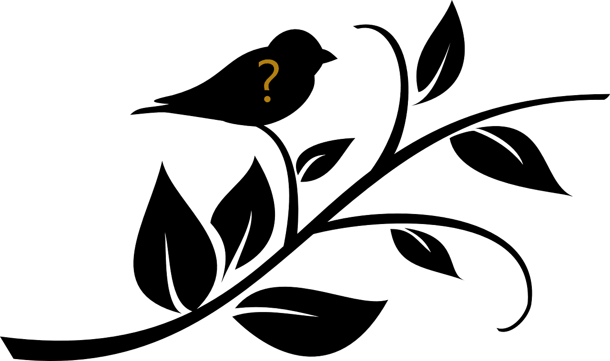

Главная
Игра
Галерея
Добро пожаловать в игру Songbird!
Основные правила:
вам предстоит угадать название птицы основываясь на предоставленной записи её голоса.
всего в игре будет 6 вопросов.
за правильный ответ можно заработать максимум 5 баллов.
в случае неправильного ответа максимальный балл уменьшается на 1.
по окончанию игры отобразится таблица с результами.
Начать игру
Счёт:
Разминка
Воробьиные
Лесные птицы
Певчие птицы
Хищные птицы
Морские птицы

Ворон
Журавль
Ласточка
Козодой
Кукушка
Синица
Прослушайте запись пения неизвестной птицы, после чего попытайтесь угадать её название из списка.
Следующий вопрос
Поздравляем!
Вы прошли викторину и набрали
из 30 возможных баллов!
Попробовать еще раз!